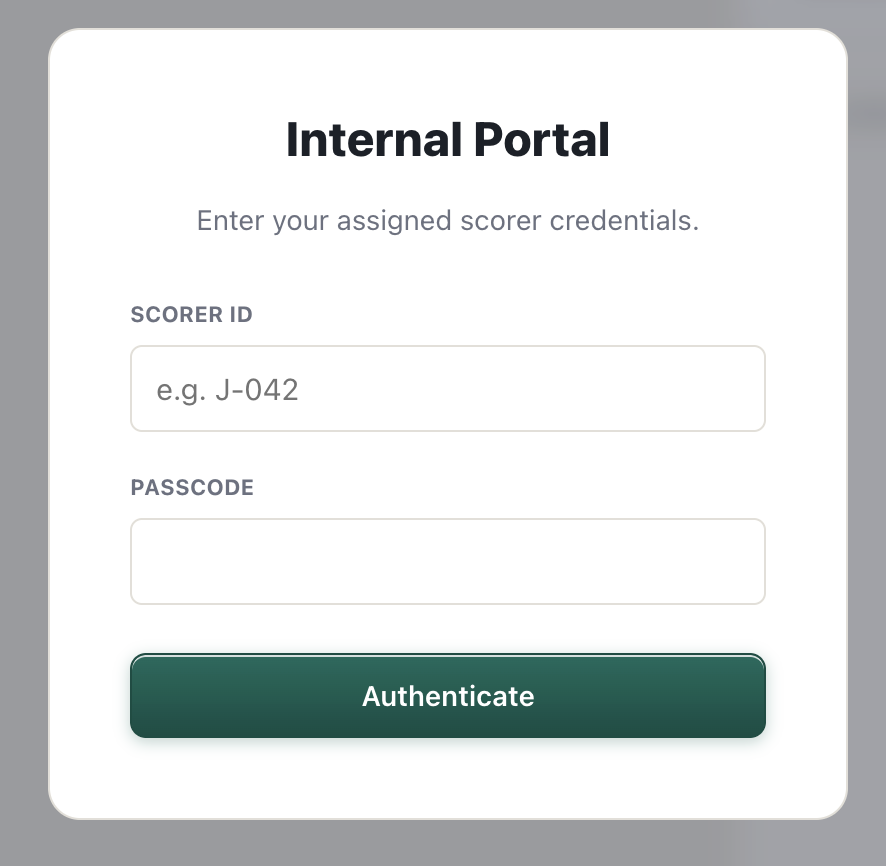
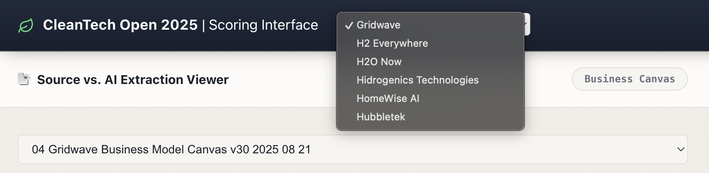
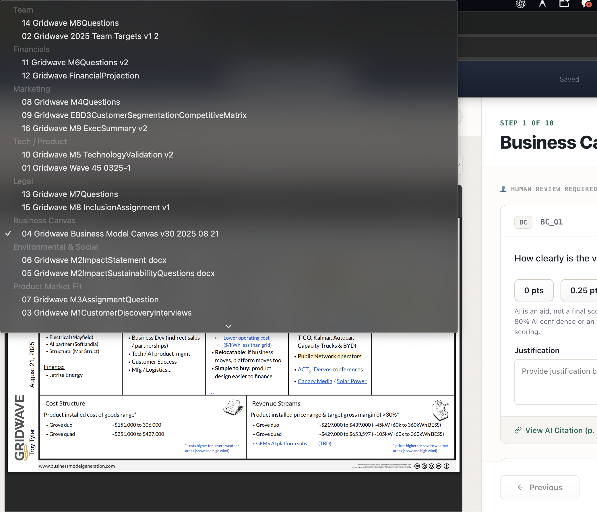
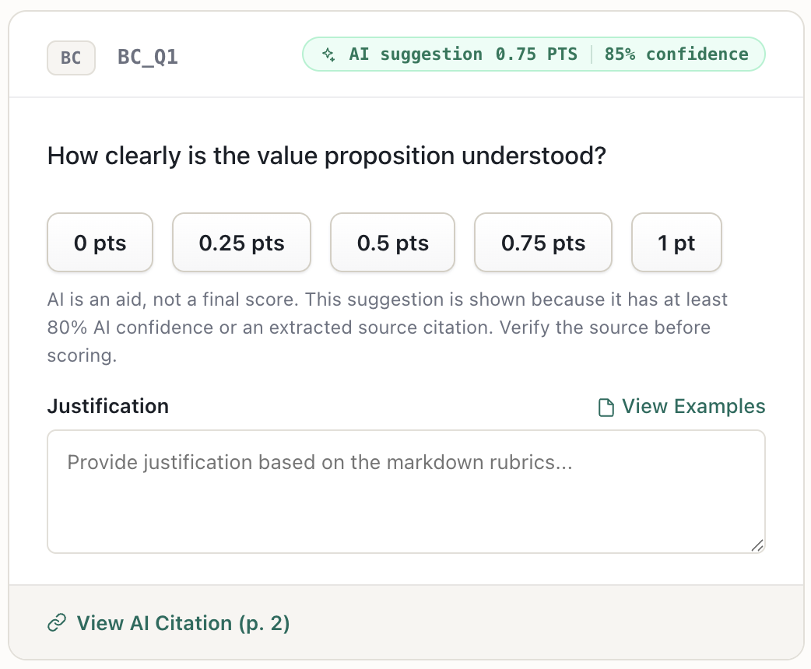
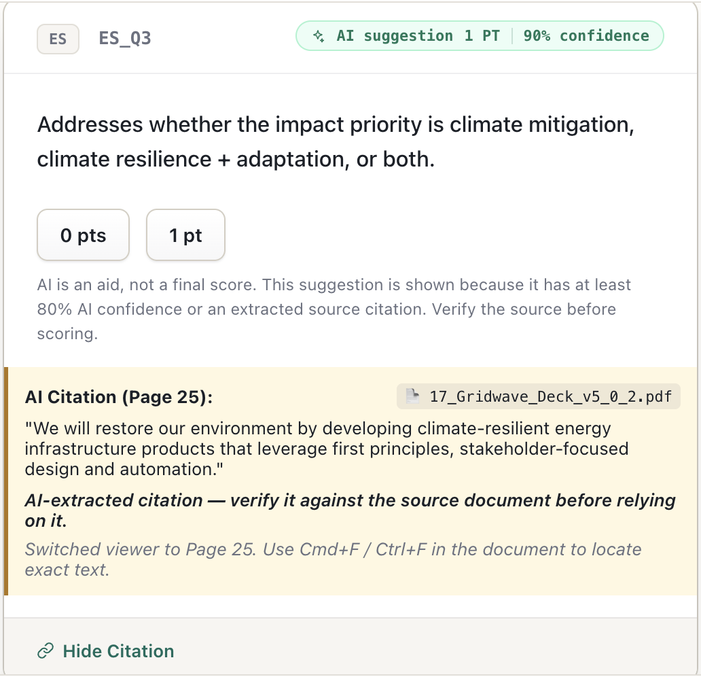
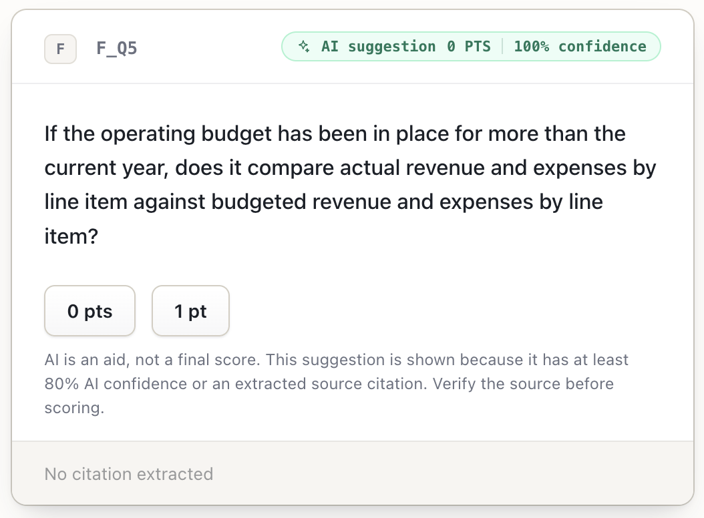
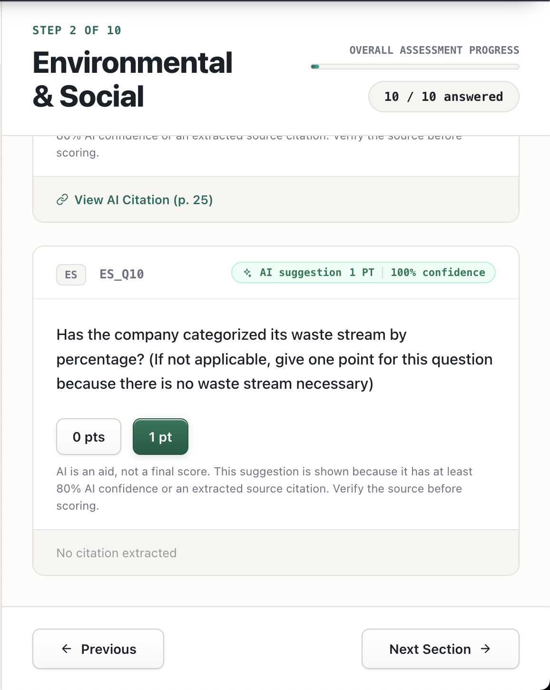

1. Sign in and select the right company
Open the current Startup Score link supplied by the program. Sign in with your Scorer ID and passcode. If you receive invalid-credential feedback, confirm the ID and password with the program lead.

Sign in with your assigned Scorer ID and passcode.
After signing in, use the company menu in the top navigation to select an assigned company. Confirm the company name before beginning. Change companies only after the header says Saved.

The company selector contains the companies assigned to you.
Header controls: Saved confirms your last update reached the system. Use Change password if needed. Use Log out only when you are finished for the session.
2. Read the source material first
The left panel is the source viewer. The document selector lists the materials attached to the current company and organizes them by section. Select the file most relevant to the question, read it carefully, and use the PDF viewer's search, zoom, and page controls as needed.

Choose the relevant source document before interpreting the question on the right.
Evidence rule: The submitted PDFs are the primary evidence. If they are incomplete, credible public research is allowed. Do not invent missing facts. If you cannot make a defensible assessment, notify the program lead.
3. Score every question in order
Each section is shown as Step X of 10. The section's answered count is separate from the overall assessment progress. Follow this same sequence for every question:
1Read the source PDF. Identify the text, data, or absence of evidence that bears on the question.
2Read the question in full. Determine exactly what the score buttons measure before making a selection.
3Review the AI suggestion. The score and confidence are informational; they are not a recommended verdict to copy.
4Open the AI citation when one is available. Compare the extracted text with the underlying PDF.
5Select one score. Then add a note where it is useful or required, wait for Saved, and continue.

Score controls appear under the question. The AI badge is neutral: a high confidence percentage does not mean a higher point value is correct.
How AI suggestions and citations work
- An AI suggestion appears only when the system has at least 80% AI confidence or extracted a direct source citation.
- The percentage expresses the system's confidence in its extraction or suggestion; it is not a quality rating for the startup and does not determine the score.
- Click View AI Citation to reveal the AI-extracted passage. When a page is available, the source viewer moves to that PDF and page.
- Verify the passage against the PDF before relying on it. The AI may be incomplete or wrong.

An opened citation shows the source document, page, and extracted text. Check it against the PDF.

“No citation extracted” is normal. Score from the source material and your own judgment.
4. Notes and required justifications
Notes explain your reasoning; they are not a place to paste AI output. Keep them brief, specific, and grounded in the source material.
| Text field type | Questions | Submission effect |
|---|
| Justification required | BC_Q1, BC_Q2, BC_Q4, BC_Q5 | A score and non-empty justification are required before final submission. |
| Optional note | BC_Q3, IS_Q7, IS_Q16, PMF_Q15, PMF_Q17, TP_Q13, TP_Q14, TP_Q15, F_Q22, F_Q23, F_Q24, IP_Q22, IP_Q50 | The score alone is sufficient. Add context only when it would help explain your judgment. |
For Business Canvas questions, select View Examples when you need the rubric examples. For all required justifications, state the relevant evidence and why it supports the score.
5. Move through sections and submit
Once every question in the current section is answered, select Next Section. Use Previous to return and correct an earlier section. The current section's answered count should be complete before moving on.

A completed section shows its answered count. Select Next Section to continue through all ten sections.
- Complete every score in all ten sections.
- Complete the four required justifications listed above.
- Confirm the active company name and wait until the header says Saved.
- Review scores for consistency, especially where source evidence was limited or jargon obscured the claim.
- Select the green Submit Evaluation button, resolve any audit items, and select Confirm and Submit only when ready to finalize.
6. Scoring guidance and FAQs
Can I Google a company?
Yes. When submitted evidence is incomplete, use credible public information to understand the company and answer the rubric. Public research does not replace verification of any AI citation.
What if no files are accessible?
Do not invent evidence. Use credible public research where appropriate. If the result still cannot be scored defensibly, notify the program lead. Do not use retired red/orange marking workflows.
What if there is no Business Model Canvas?
Score from accessible materials and permitted research. Explain your reasoning in the required Business Canvas justification fields.
How should I handle jargon?
One or two necessary technical terms are normal. If jargon makes the value proposition, branding, marketing, or investor pitch unclear, reflect that lack of clarity in the score.
Final principle: The AI can help locate evidence, but it never replaces your judgment. Read the source, verify the citation, apply the rubric, and then score.